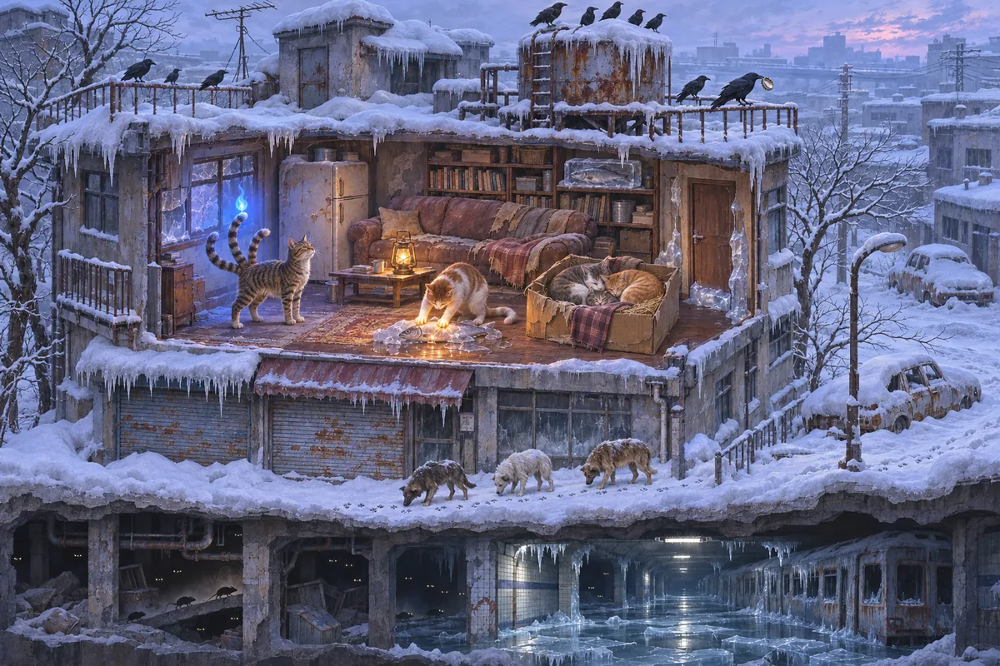

끝나지 않는 겨울, 사람 없는 도시의 고양이: 생존 샌드박스 기획
제목 미정 / 틀: 프로젝트 좀보이드식 쿼터뷰 생존 샌드박스 / 수치는 전부 시제품에서 확인할 가설이다
사람은 사라졌고 겨울은 끝나지 않는다. 눈에 묻힌 도시에서 고양이들이 사람이 남긴 집에 굴을 틀고 산다. 지하는 쥐, 길은 들개, 지붕은 까마귀의 것이다. 고양이는 마법을 쓸 수 있고, 쓸 때마다 몸이 식는다.

틀은 프로젝트 좀보이드로 대표되는 쿼터뷰 생존 샌드박스다. 집을 털고, 몸을 돌보고, 거점을 지키고, 한 번 죽으면 그 캐릭터는 끝난다. 주인공은 네 발로 걷고 뛰는 보통 고양이다. 손이 없으니 도구를 만들지 않는다. 대신 고양이끼리 말이 통하고, 마법을 쓴다.
세계는 한 문단과 규칙 셋으로 줄였고, 나머지는 전부 게임의 세부다. 사람이 왜 없는지, 겨울이 왜 끝나지 않는지는 아무도 모른다. 새로 지어낸 낱말은 쓰지 않았다. 굴, 식구, 온기, 꼬리처럼 원래 있는 말만 썼다.
좁은 화면에서는 표를 좌우로 밀어 나머지 열을 볼 수 있다.
1. 틀: 좀보이드에서 가져오는 것과 바꾸는 것
좀보이드에서 지키고 싶은 재미는 셋이다. 빈집을 털어 물자를 모으고 아껴 쓰는 재미, 하나는 쉽지만 떼로 몰리면 죽는 적, 거점을 지키며 스스로 먹고사는 재미다. 이 셋은 그대로 두고 나머지를 고양이에 맞게 바꿨다.
| 좀보이드 | 이 기획 | 바꾼 이유 |
|---|---|---|
| 쿼터뷰, 한 캐릭터 실시간 조작 | 그대로 | 틀이다 |
| 좀비 떼 | 쥐 떼 | 고양이에게 쥐는 한 마리면 먹이고 많으면 위험이다. 적이 곧 식량이 된다 |
| 좀비 수는 정해져 있다 | 쥐 수는 내가 흘린 먹이를 따라 는다 | 굴을 깔끔하게 굴릴수록 덜 몰린다. 압박을 내가 조절한다 |
| 물리면 죽는다 | 물리면 앓는다 | 손질하고 쉬면 낫는다. 물린 뒤에도 할 일이 있다 |
| 도구 제작과 건축 | 물어 나르기와 마법 | 고양이는 손이 없다. 틈은 얼려서 막고 먹이는 녹여서 먹는다 |
| 창문에 판자 | 쥐가 드나드는 틈을 얼음으로 봉하기 | 고양이 굴의 적은 문이 아니라 틈으로 온다 |
| 전기와 수도가 끊긴다 | 겨울이 깊어진다 | 전기와 수도는 오래전에 끊겼다. 조여 오는 것은 추위다 |
| 사계절과 농사 | 겨울뿐. 사냥과 얼음낚시, 얼어 있는 사람의 먹이 | 아무것도 자라지 않는다. 대신 아무것도 썩지 않는다 |
| 쓸수록 느는 기술 | 살아남을수록 느는 꼬리 | 꼬리 하나에 마법 하나가 열린다 |
| 헬리콥터 사건 | 이레마다 오는 가장 긴 밤 | 가장 추운 밤에 모두가 온기로 몰린다 |
| 죽으면 같은 세계에 새 캐릭터 | 식구가 잇는 아홉 목숨 | 굴과 식구가 남아 있어 이어 갈 이유가 생긴다 |
2. 세계: 한 문단과 규칙 셋
사람은 사라졌고 겨울은 끝나지 않는다. 언제부터였는지, 왜 그런지는 아무도 모른다. 도시는 눈에 묻혔고, 사람이 남긴 집과 물건은 얼어붙은 채 그대로 있다. 고양이들은 그 집에 굴을 틀고 무리를 이루어 산다. 플레이어는 작은 무리의 고양이 한 마리다.
- 도시는 층마다 주인이 다르다. 지하는 쥐, 길은 들개, 지붕은 까마귀, 집 안은 고양이의 것이다. 어느 층으로 다니느냐가 누구를 상대하느냐를 정한다.
- 온기가 목숨이고 마법의 값이다. 고양이는 마법을 쓸 수 있고, 쓸 때마다 체온을 치른다. 마법을 쓸지 말지가 매번 목숨을 건 셈이다.
- 살아남을수록 꼬리가 갈라진다. 가장 긴 밤을 넘길 때마다 꼬리가 하나 늘고, 꼬리마다 마법이 하나 열린다. 아홉까지 는다.
정해 둔 것
| 항목 | 결정 | 따라오는 것 |
|---|---|---|
| 고양이의 모습 | 네 발로 걷고 뛰는 보통 고양이 | 물건은 물어 나른다. 도구를 만들지 않는다 |
| 계절 | 겨울뿐이다 | 한 해의 달력 대신 이레 주기의 한파가 있다. 겨울은 조금씩 깊어진다 |
| 사람과 겨울의 이유 | 알 수 없다 | 흔적으로만 보인다. 고양이는 궁금해하지 않는다. 플레이어만 짐작한다 |
| 말 | 고양이끼리 고양이의 말로 통한다 | 식구에게 일을 맡기고, 이웃 무리와 거래하고, 늙은 고양이에게 이야기를 듣는다 |
| 마법 | 고양이만 쓴다. 옛이야기의 힘, 싸움의 힘, 온기를 다루는 힘 세 갈래 | 값은 체온이다. 쥐와 개와 까마귀는 마법이 없다 |
| 마법을 얻는 길 | 꼬리가 늘며 열린다 | 오래 산 고양이는 꼬리가 갈라진다는 옛이야기에서 왔다 |
| 쥐 | 말도 마법도 없는 짐승 떼 | 냄새와 온기를 따라 움직인다. 협상은 없다 |
| 분위기 | 굴 안은 따뜻하고 익살스럽게, 굴 밖은 춥고 조용하게 | 낮잠과 꾹꾹이는 귀엽게, 가장 긴 밤은 긴장되게 |
| 무대 | 이름 없는 한국의 작은 도시 | 아파트 단지, 상가, 재래시장, 학교, 언 하천, 지하철 한 노선 |
사람과 겨울의 흔적
설명하는 글이나 대사는 없다. 고양이는 글을 못 읽지만 플레이어는 읽을 수 있다. 그 차이가 이 세계의 유일한 수수께끼다.
- 집집마다 같은 달에 멈춰 있는 달력.
- 문마다 붙은 같은 모양의 안내문.
- 사료가 오래전에 바닥난 자동 급식기와 그 옆에 붙은 쪽지.
- 눈밭 한가운데 반쯤 녹다 만 채 얼어붙은 눈사람.
- 늙은 고양이들이 전하는, 깡통을 따 주던 이들의 이야기.
3. 몸: 네 발 고양이가 하는 일과 못 하는 일
주인공은 사람 정강이 높이의 보통 고양이다. 이 크기가 적의 무게와 집의 넓이를 정하고, 손이 없다는 점이 할 수 있는 일을 정한다.
| 상대 | 고양이에게 느껴지는 크기 | 뜻하는 것 |
|---|---|---|
| 쥐 | 중간 크기 개 | 한 마리는 잡을 만하고 열 마리는 개 떼다 |
| 까마귀 | 사람만 한 새 | 한 마리와는 맞설 수 있지만 떼는 못 이긴다 |
| 들개 | 곰 | 정면으로는 이길 수 없다. 피하는 적이다 |
| 부엉이 | 하늘에서 내려오는 가장 큰 짐승 | 보이면 이미 늦다 |
| 사람의 집 | 여러 층짜리 탐험 장소 | 책장과 싱크대가 절벽이고 냉장고 위가 망루다 |
| 하는 일 | 못 하는 일 |
|---|---|
| 걷기, 살금 걷기, 달리기 | 도구를 쥐고 쓰기 |
| 가구와 담과 나무 오르기, 두 칸 뛰어 건너기 | 뚜껑을 돌려 열기 |
| 좁은 틈 지나기 | 깡통 따기 |
| 입으로 물어 나르기, 물어서 끌기 | 끈 묶기 |
| 앞발로 치기, 당기기, 눈 파기 | 둥근 손잡이 돌리기 |
| 봉지와 상자와 천 뜯기 | 글 읽기 |
| 발톱으로 긁어 표시하기 | 무거운 문 열기 |
못 하는 일은 그대로 못 하게 둔다. 그 빈자리를 식구와 마법이 조금씩 메운다. 마법은 손을 대신하지 않는다. 얼리고, 녹이고, 밀어내고, 태울 뿐이다.
움직임
- 높이는 네 단계다. 바닥, 가구 위, 담과 낮은 지붕, 옥상. 가구와 나무와 눈 더미가 계단이다.
- 틈은 두 가지다. 고양이 틈은 고양이와 쥐가 지나고 개는 못 지난다. 쥐 틈은 쥐만 지난다.
- 뛰어내리기. 두 층 높이까지는 다치지 않는다. 눈 더미 위로는 더 높은 데서도 뛴다.
- 눈. 깊은 눈에서는 느리다. 다져진 길, 담 위, 처마 밑이 빠른 길이다.
나르기
| 방법 | 양 | 대가 |
|---|---|---|
| 입에 물기 | 1칸 | 물고 있는 동안 물지 못하고 하악질도 못 한다 |
| 천에 올려 끌기 | 3칸 | 속도가 절반이고 눈 위에 끌린 자국이 남는다. 오를 수 없다 |
| 식구와 같이 가기 | 한 마리에 1칸 | 굴이 그만큼 빈다 |
| 눈에 묻어 두기 | 제한 없음 | 나중에 다시 와야 한다. 쥐와 까마귀가 먼저 찾을 수 있다 |
한 입의 무게. 한 번에 하나만 문다. 그래서 무엇을 가져오느냐보다 몇 번 오가느냐가 계획이 된다. 좀보이드에서 1분이면 터는 집이 여기서는 한 번의 원정이고, 큰 냉동고 하나는 며칠 치 일이다. 지도가 작아도 할 일이 많다.
4. 층: 지하, 길, 집 안, 지붕
같은 두 지점 사이에도 길이 네 가지다. 어느 층을 고르느냐가 그날의 계획이다.
| 층 | 주인 | 얻는 것 | 위험 | 온기 |
|---|---|---|---|---|
| 지하 지하철, 하수도, 지하실 | 쥐 | 쥐 사냥, 얼지 않은 물, 창고의 먹이 | 어둠, 떼 | 얼지 않는다. 도시에서 가장 따뜻하고 쥐가 가장 빽빽하다 |
| 길 도로, 골목, 언 하천 | 들개 | 빠른 이동, 얼음낚시 | 눈 위 발자국으로 쫓긴다 | 가장 춥다. 바람이 분다 |
| 집 안 아파트, 상가, 주택 | 고양이 | 언 먹이, 잠자리 재료, 굴 자리 | 이웃 무리, 꺼지는 바닥 | 바람은 막지만 밖만큼 춥다. 굴로 꾸려야 따뜻하다 |
| 지붕 옥상, 담, 나무 위 | 까마귀 | 들개 없는 길, 햇볕 드는 유리 건물 | 낮의 까마귀, 밤의 부엉이, 언 곳의 미끄럼 | 맑은 낮에만 볕이 든다 |
가장 따뜻한 곳이 가장 위험하다. 얼지 않는 곳은 지하뿐이고 그곳은 쥐의 층이다. 몸이 식을수록 내려가고 싶어지고, 내려갈수록 수를 세어야 한다.
5. 온기와 마법
체온은 0에서 100까지다. 30 아래로 내려가면 걸음이 느려지고, 0이 되면 쓰러진다. 쓰러진 고양이는 식구가 굴로 물어 오지 않으면 죽는다. 마법은 이 체온을 값으로 치른다. 마력이라는 수치는 따로 없다.
| 체온이 깎이는 때 | 체온이 오르는 때 |
|---|---|
| 굴 밖에 있는 동안. 길에서 가장 빠르다 | 식구와 붙어 있을 때 |
| 밤, 바람, 눈보라 | 잠자리에서 잘 때 |
| 털이 젖었을 때 | 먹이를 먹은 뒤 |
| 마법을 쓸 때 | 맑은 낮의 볕, 불 곁, 깊은 지하 |
처음부터 하는 몸짓 셋
고양이가 원래 하는 몸짓에 약한 마법이 실려 있다. 꼬리가 하나여도 쓴다.
| 몸짓 | 하는 일 | 체온 |
|---|---|---|
| 꾹꾹이 | 앞발로 누른 것을 녹인다. 언 먹이, 눈, 얼어붙은 문틈, 하천의 얼음 | 5 |
| 골골 | 붙어 있는 식구의 상처와 병이 빨리 낫는다. 나도 낫는다 | 분마다 3 |
| 하악질 | 바람이 실려 앞의 쥐 몇 마리를 밀어낸다. 떼가 겁을 잃는 문턱을 잠깐 올린다 | 5 |
꼬리로 여는 마법 아홉
| 갈래 | 마법 | 하는 일 | 치르는 것 |
|---|---|---|---|
| 옛이야기 | 그림자 걸음 | 그림자 안에서는 보이지 않는다. 달리면 풀린다 | 체온 10 |
| 밤눈 | 어둠 속을 낮처럼 본다. 지나간 흔적과 죽은 고양이의 혼이 보인다 | 켜 둔 동안 분마다 2 | |
| 고양이불 | 꼬리 끝에 뜨겁지 않은 푸른 불이 붙는다. 빛 안으로는 쥐 떼가 들어오지 못한다 | 분마다 3. 멀리서 까마귀와 이웃이 본다 | |
| 싸움 | 서리 발톱 | 할퀸 상대가 느려진다. 물과 틈을 얼린다 | 체온 10 |
| 불 꼬리 | 꼬리를 휘둘러 태운다. 땔감에 불을 붙인다 | 체온 20. 마른 집에 번진다 | |
| 큰 울음 | 둘레의 떼가 한동안 달아난다 | 체온 25. 온 동네가 듣는다 | |
| 온기 | 털 세우기 | 한동안 체온이 절반만 깎인다 | 체온 10. 그동안 살금 걷지 못한다 |
| 온기 가두기 | 돌 하나에 체온을 담아 둔다. 나중에 품으면 돌려받는다 | 담은 만큼. 돌은 하루에 절반씩 식는다 | |
| 온기 나누기 | 닿은 식구에게 체온을 건넨다. 쓰러진 식구를 깨운다 | 건넨 만큼 |
꼬리
- 느는 때. 가장 긴 밤을 살아서 넘길 때마다 꼬리가 하나 갈라진다. 아홉까지 는다.
- 고르기. 꼬리가 늘 때 세 갈래에서 하나씩, 마법 셋이 나오고 그 가운데 하나를 고른다. 아홉 꼬리 고양이도 아홉 가지 가운데 여덟만 안다.
- 보이는 성장. 꼬리 수는 누구에게나 보인다. 이웃 무리와 까마귀가 꼬리 많은 고양이를 다르게 대한다.
- 죽으면. 꼬리는 그 고양이의 것이다. 죽으면 같이 사라진다.
체온이 곧 마력인 이유. 마력을 따로 두면 마법은 차면 쓰는 것이 된다. 체온으로 치르면 마법은 추울수록 쓰고 싶고 추울수록 쓰기 무서운 것이 된다. 불 꼬리로 불을 피우면 따뜻해지지만 피우느라 몸이 식는다. 고양이불로 쥐 떼를 막는 동안 몸은 계속 식는다. 굴이 따뜻하고 배가 부른 고양이만 마법을 넉넉히 쓴다. 그래서 굴과 먹이가 마법의 바탕이 된다.
6. 쥐 떼: 한 마리는 먹이, 서른 마리는 죽음
쥐는 생각이 없는 짐승 떼다. 실제 쥐의 습성 다섯 가지로만 움직인다. 규칙을 아는 만큼 쉬워지는 적이다.
| 규칙 | 게임에서 | 플레이어가 하는 일 |
|---|---|---|
| 먹이와 온기를 따라 모인다 | 녹인 먹이와 찌꺼기는 냄새가 난다. 구역의 쥐 수는 닿을 수 있는 먹이를 따라 이레마다 늘거나 준다 | 먹이를 언 채로 둔다. 찌꺼기를 굴 밖 멀리 버린다 |
| 벽을 따라 다닌다 | 벽에 붙은 칸으로만 다니고 트인 바닥 세 칸 이상은 꺼린다 | 먹이를 벽에서 떨어진 높은 가구 위에 둔다. 다니는 길목에서 기다린다 |
| 낯선 것을 피한다 | 새로 놓인 물건 둘레는 이틀 동안 피한다 | 방울을 미리 흩어 놓아 익숙해지게 한다 |
| 갉아서 뚫는다 | 종이는 바로, 천 뭉치는 2시간, 나무 문은 6시간. 얼음과 쇠는 못 뚫는다 | 틈을 서리 발톱으로 얼려 봉한다 |
| 수가 모이면 겁을 잃는다 | 여덟 마리 아래면 고양이를 보고 달아난다. 그 위면 덮친다 | 수를 세고 들어간다 |
겁을 잃는 문턱
| 상황 | 덮치는 수 |
|---|---|
| 보통 | 8마리부터 |
| 내 영역 표시 안 | 16마리부터 |
| 가장 긴 밤 | 위의 절반 |
| 하악질을 한 직후 | 잠깐 4마리 더 |
| 고양이불의 빛 안 | 들어오지 못한다 |
- 사냥. 살금 다가가 덮치면 한 번에 잡는다. 들키면 달아나고, 달아난 쥐는 무리를 부르지 않는다.
- 물림. 물리면 상처가 나고 다섯 번에 한 번은 열이 오른다. 핥아 손질하고 골골거리며 하루 쉬면 낫는다.
- 먹이를 지키는 세 가지. 눈에 묻으면 냄새가 약해지지만 쥐가 파낸다. 높은 가구 위는 쥐가 오르기 어렵다. 서리 발톱으로 얼음 덩이에 가두면 쥐가 뚫지 못한다. 대신 먹을 때 녹이느라 체온이 든다.
쥐가 있는 곳. 쥐도 얼어 죽는다. 그래서 얼지 않는 지하에 가장 많고, 그다음이 고양이 굴 둘레다. 굴은 따뜻하고 녹인 먹이가 있다. 굴이 넉넉해질수록 쥐가 모이므로, 잘 사는 것과 위험해지는 것이 같은 일이다.
7. 나머지 넷: 들개, 까마귀, 부엉이, 이웃 무리
| 상대 | 때와 곳 | 행동 | 상대하는 법 | 얻는 것 |
|---|---|---|---|---|
| 들개 무리 3~6마리 | 낮과 해질녘, 길 | 눈 위 발자국과 냄새를 따라와 무리로 몬다. 오르지 못하고 틈을 못 지난다. 나무 밑에서 2시간까지 기다린다 | 높은 곳과 틈으로 따돌린다. 눈 오는 동안 움직인다. 먹이를 던져 두고 달아난다 | 없음 |
| 까마귀 떼 10~30마리 | 낮, 지붕 | 낯선 고양이를 보면 울어서 둘레에 알린다. 둥지에 다가가면 떼로 쫀다. 묻어 둔 먹이를 파 간다 | 둥지를 돌아간다. 반짝이는 것을 놓아두고 물건을 주고받는다 | 높은 곳의 물건, 경고 울음 |
| 부엉이 도시에 두세 마리 | 밤, 트인 곳 | 지붕 위나 눈밭을 여섯 칸 넘게 건너는 고양이를 덮친다. 우는 소리가 들린 밤에만 사냥한다 | 처마 밑과 나무 밑으로 다닌다. 그림자 걸음으로 건넌다 | 없음 |
| 이웃 무리 지도에 셋 | 언제나, 집 안 | 발톱 자국과 냄새로 영역을 표시한다. 넘어오면 경고하고 다시 넘어오면 싸운다. 우두머리는 꼬리가 여럿이고 마법을 쓴다 | 말을 건다. 선물하고 거래한다. 가장 긴 밤에 굴을 합친다. 싸워서 영역을 넓힌다 | 이야기, 식구, 합친 굴의 온기 |
까마귀의 기억
까마귀는 고양이 한 마리가 아니라 무리를 기억한다. 호의는 네 단계다.
- 원수보이면 떼로 쫀다. 묻어 둔 먹이를 찾아 판다
- 경계보이면 울어서 들개와 이웃에게 알린다
- 모른 척둥지만 피하면 건드리지 않는다
- 이웃들개와 부엉이가 오면 울어 준다. 물건을 주고받는다
까마귀를 죽이면 원수가 되고, 그 기억은 캐릭터가 죽어도 무리에 남는다. 반짝이는 것을 꾸준히 놓아두면 이웃이 되고, 그것도 남는다.
이웃 무리의 성격
- 순한 무리. 영역이 좁고 거래를 반긴다. 가장 긴 밤에 굴을 합치자고 먼저 청한다.
- 깐깐한 무리. 영역 표시를 자주 고친다. 선물이 쌓여야 말을 섞는다. 아는 이야기가 많다.
- 사나운 무리. 영역을 넓히려 든다. 굶으면 남의 먹이를 턴다. 우두머리의 꼬리가 가장 많다.
이웃 우두머리의 꼬리 수는 멀리서도 보인다. 꼬리 셋 달린 우두머리가 있는 무리의 영역에 꼬리 하나로 들어가는 것은 쥐 서른 마리 굴에 들어가는 것과 같다.
8. 들키는 길: 냄새, 소리, 발자국
| 길 | 누가 따라오나 | 얼마나 가나 | 가리는 법 |
|---|---|---|---|
| 눈 위 발자국 | 들개, 이웃 무리 | 이틀. 새 눈이 오면 덮인다 | 눈 오는 동안 움직인다. 담 위와 처마 밑으로 다닌다 |
| 끌린 자국 | 들개, 이웃 무리, 까마귀 | 발자국보다 뚜렷하다 | 여러 번 물어 나른다. 식구와 간다 |
| 먹이 냄새 | 쥐, 까마귀 | 녹인 양에 비례한다 | 언 채로 둔다. 먹을 만큼만 녹인다 |
| 피 냄새 | 쥐, 들개 | 상처를 손질할 때까지 | 핥아서 손질한다 |
| 소리 | 모두 | 큰 울음, 깨지는 유리, 터지는 깡통이 가장 크다 | 살금 걷는다. 조용히 여는 길을 찾는다 |
| 빛과 연기 | 까마귀, 이웃 무리 | 고양이불과 불은 밤에 멀리 보인다 | 창 없는 방에서 켠다. 필요한 동안만 켠다 |
고양이 쪽에도 감각이 있다. 킁킁거리면 가까운 흔적이 보인다. 들개가 지나간 길, 이웃 무리의 영역 표시, 쥐가 다니는 벽이 색 띠로 드러난다. 밤눈을 켜면 더 멀리, 더 오래된 흔적까지 보인다.
9. 몸의 수치 일곱 가지
| 수치 | 나빠지는 때 | 나빠지면 | 돌보는 법 |
|---|---|---|---|
| 체온 | 굴 밖, 밤, 바람, 젖은 털, 마법 | 느려지다가 쓰러진다. 마법을 못 쓴다 | 식구, 잠자리, 먹이, 볕, 불, 지하 |
| 배고픔 | 늘, 추울수록 더 빨리 | 체온이 더 빨리 깎인다 | 고기와 생선. 언 것은 녹여서 |
| 목마름 | 늘 | 걸음이 느려진다 | 꾹꾹이로 녹인 눈. 눈을 그냥 먹으면 체온이 깎인다 |
| 털 | 젖음, 싸움, 손질을 거를 때 | 체온이 빨리 깎이고 상처가 덧난다 | 마른 곳에서 핥아 손질한다. 시간이 든다 |
| 졸음 | 깨어 있는 동안 | 덮치기와 오르기를 놓친다 | 하루에 낮잠 한 번, 밤잠 한 번 |
| 상처와 병 | 물림, 떨어짐, 상한 먹이 | 열이 오르고 냄새로 들킨다 | 손질하고 쉰다. 골골거린다 |
| 기분 | 굶주림, 식구의 죽음, 좁은 굴 | 식구가 일을 미루고 떠난다 | 놀이, 상자, 캣닢, 볕 쬐기 |
잠이 장소를 만든다. 고양이는 하루에 열두 시간에서 열여섯 시간을 잔다. 게임에서는 하루에 두 번 자야 한다. 밖에서 낮잠 잘 곳, 곧 높고 좁고 마르고 볕 드는 자리가 원정의 중간 거점이 된다. 지도에 그런 자리를 표시해 두는 것이 길을 아는 것이다.
10. 싸움과 방비
무기는 없다. 발톱과 이빨과 마법이 전부다. 싸움은 쥐와 까마귀 한두 마리, 이웃 고양이를 상대로만 성립하고 나머지는 피한다.
| 수단 | 쓰임 | 값 |
|---|---|---|
| 발톱 | 빠르고 가깝다. 쥐는 두 번에 잡는다 | 없음 |
| 덮치기 | 살금 상태에서 두 칸을 뛰어 한 번에 잡는다 | 없음. 들키면 못 쓴다 |
| 물고 버티기 | 한 마리를 물어 끝낸다. 그동안 다른 쥐에게 물린다 | 없음 |
| 하악질 | 앞의 몇 마리를 밀어내고 문턱을 올린다. 물러날 틈을 번다 | 체온 5 |
| 서리 발톱 | 할퀸 상대가 느려진다. 좁은 길목에서 떼를 한 줄로 만든다 | 체온 10 |
| 불 꼬리 | 넓게 태운다. 떼에 가장 세다 | 체온 20. 집이 탄다 |
| 큰 울음 | 둘레의 떼를 한동안 흩는다. 마지막 수다 | 체온 25. 모두가 듣는다 |
| 방비 | 하는 일 | 약점 |
|---|---|---|
| 천 뭉치로 틈 막기 | 물어다 틈에 밀어 넣는다. 바람을 막는다 | 쥐가 2시간이면 갉는다 |
| 얼음으로 틈 봉하기 | 서리 발톱으로 얼린다. 쥐가 뚫지 못한다 | 굴이 따뜻해지면 녹는다 |
| 영역 긁기 | 기둥과 문틀을 긁어 표시한다. 작은 쥐 무리와 이웃이 넘지 않는다 | 사흘마다 다시 긁는다. 큰 떼에게는 안 통한다 |
| 방울 흩어 놓기 | 쥐가 다니는 벽 밑에 물어다 놓는다. 건드리면 울려서 식구가 깬다 | 이틀은 쥐가 피해 다녀서 안 울린다 |
| 지키는 식구 | 굴에 남아 쥐를 쫓는다 | 원정에 데려갈 식구가 준다 |
11. 털기: 건물, 여는 법, 가져올 것
겨울이 끝나지 않아서 사람이 남긴 먹이는 얼어붙은 채 썩지 않았다. 집 털기의 목표는 언 먹이와 잠자리 재료다. 손이 없으므로 집마다 어떻게 여느냐가 수수께끼다.
| 건물 | 주로 나오는 것 | 조심할 것 |
|---|---|---|
| 아파트 | 냉장고 속 언 먹이, 담요, 상자, 봉지 사료 | 높은 층의 꺼진 바닥. 이웃 무리의 영역 |
| 상가와 편의점 | 봉지 먹이, 통조림, 반짝이는 것 | 깨진 유리. 길가라 들개가 지난다 |
| 재래시장 | 생선 가게의 냉동고, 건어물, 스티로폼 상자 | 지붕이 내려앉아 까마귀가 많다 |
| 냉동 창고 | 도시에서 가장 큰 먹이 더미 | 쥐도 안다. 문이 무겁다 |
| 학교 | 급식실의 냉동고, 체육관의 매트 | 넓고 트여서 밤에는 부엉이가 든다 |
| 동물 병원 | 사료 포대, 이동장, 캣닢 | 드물다 |
| 문구점 | 구슬과 방울, 종이 | 종이 더미에 쥐가 산다 |
| 유리 온실 | 맑은 낮의 볕. 낮잠 자리 | 지붕이라 까마귀의 층이다 |
| 지하철역 | 얼지 않은 물, 창고의 먹이, 온기 | 쥐의 층이다 |
여는 법
| 대상 | 여는 법 | 대가 |
|---|---|---|
| 봉지, 종이 상자 | 물어뜯는다 | 없음 |
| 낮은 서랍과 찬장 | 앞발로 당긴다 | 시간 |
| 높은 찬장 | 가구를 타고 올라가 밀어 떨어뜨린다 | 소리. 깨지는 것은 깨진다 |
| 레버 손잡이 문 | 뛰어 매달린다 | 없음 |
| 둥근 손잡이 문 | 못 연다. 깨진 창, 환기구, 벽의 틈을 찾는다 | 돌아가는 길 |
| 얼어붙은 냉장고와 냉동고 | 꾹꾹이로 문틈을 녹이고 앞발로 당긴다. 식구와 같이 당기면 빠르다 | 체온, 시간 |
| 유리병 | 높은 데서 떨어뜨려 깬다 | 큰 소리. 유리 조각을 밟으면 다친다 |
| 통조림 | 못 연다. 불 위에 올려 터뜨린다 | 불 꼬리가 있어야 한다. 가장 큰 소리 |
가져올 것
| 물건 | 쓸모 |
|---|---|
| 언 생선과 고기, 봉지 사료, 건어물 | 먹이. 녹여서 먹는다 |
| 종이 상자 | 잠자리. 좁을수록 따뜻하다. 들어가면 기분이 좋다 |
| 스티로폼 상자 | 가장 따뜻한 잠자리 |
| 짚, 신문지, 솜 | 잠자리 속. 젖어도 덜 식는다 |
| 담요와 옷 | 잠자리와 틈 막기. 젖으면 얼어서 차다 |
| 종이와 나무 조각 | 땔감. 불 꼬리가 있어야 쓴다 |
| 큰 솥 | 불을 담는 자리. 여럿이 끌어야 한다 |
| 매끈한 돌과 벽돌 | 온기를 가두는 돌 |
| 방울 | 흩어 놓으면 경보 |
| 구슬, 병뚜껑, 거울 조각 | 까마귀에게 주는 것 |
| 이동장 | 문이 닫히는 잠자리. 새끼를 둔다 |
| 캣닢, 깃털, 실뭉치 | 기분 |
처음 보는 물건은 쓸모가 표시되지 않는다. 냄새 맡고, 쳐 보고, 들어가 보고, 물어 보면 알게 된다. 늙은 고양이나 이웃 무리에게 물어도 된다. 알게 된 것은 무리의 이야기로 남는다.
12. 굴과 먹이
굴 자리를 고르는 기준
- 입구가 고양이 틈이다. 들개가 못 들어온다.
- 쥐 틈이 적다. 막을 틈이 적을수록 좋다.
- 방이 작다. 작은 방이 빨리 데워진다.
- 2층 이상이다. 쥐가 덜 오른다. 대신 먹이를 물고 올라야 한다.
- 남쪽 창이 있다. 맑은 낮에 볕이 든다.
| 꾸리는 것 | 하는 일 | 필요한 것 |
|---|---|---|
| 잠자리 | 잠의 질과 밤의 체온. 붙어 자는 식구 한 마리마다 더 따뜻하다 | 상자, 짚과 솜. 물어다 쌓는다 |
| 막은 틈 | 바람과 쥐를 막는다 | 천 뭉치, 서리 발톱 |
| 먹이 자리 | 벽에서 떨어진 높은 가구 위, 창밖의 눈 더미, 얼음 덩이 | 자리 고르기, 서리 발톱 |
| 온기 돌 | 낮에 남는 체온을 담아 두고 밤에 품는다 | 돌, 온기 가두기 |
| 불 자리 | 굴을 데운다. 통조림을 연다. 눈을 녹인다 | 큰 솥, 땔감, 불 꼬리 |
| 긁는 기둥 | 영역 표시 | 나무 기둥이나 문틀 |
| 놀 자리 | 기분 | 상자, 캣닢, 볕 드는 창가 |
따뜻한 굴과 닫힌 굴은 서로를 깎는다. 굴을 데울수록 틈을 봉한 얼음이 녹고, 먹이가 녹아 냄새가 퍼진다. 불을 피우면 따뜻하지만 쥐가 드나들 틈이 열린다. 얼마나 데우고 얼마나 닫아 둘지가 굴 살림의 중심이다.
먹이
| 먹이 | 곳 | 조건 |
|---|---|---|
| 사람이 남긴 언 먹이 | 집, 가게, 창고 | 여는 법을 찾고, 물어 나르고, 녹인다. 캘수록 준다 |
| 쥐 | 지하, 굴 둘레 | 수를 세고 들어간다. 줄지 않는다 |
| 물고기 | 언 하천 | 꾹꾹이로 얼음에 구멍을 내고 앞발로 낚아챈다. 길 한가운데라 들개가 본다 |
| 참새와 비둘기 | 지붕, 나무 | 까마귀의 층이다 |
| 통조림 | 가게, 찬장 | 드물다. 불이 있어야 연다 |
사람이 남긴 먹이는 줄기만 한다. 가까운 집부터 비어 가므로 원정이 점점 멀어진다. 쥐와 물고기는 줄지 않지만 위험하다. 초반에는 집을 털고, 꼬리가 늘수록 사냥으로 옮겨 가게 된다.
13. 식구와 고양이 말
시작은 셋이다. 플레이어, 꼬리 셋 달린 늙은 고양이, 새끼 한 마리. 직접 움직이는 것은 한 마리고 나머지에게는 말로 일을 맡긴다.
| 맡기는 일 | 하는 것 |
|---|---|
| 지키기 | 굴에 남아 쥐를 쫓고 방울이 울리면 깨운다 |
| 사냥 | 굴 둘레에서 쥐와 새를 잡아 온다. 다쳐서 돌아오기도 한다 |
| 데우기 | 잠자리에 누워 골골거린다. 앓는 식구와 새끼가 낫는다 |
| 따라오기 | 원정에 같이 간다. 한 입씩 더 나르고 같이 당긴다 |
| 찾으러 가기 | 쓰러진 식구를 굴로 물어 온다 |
고양이 말이 하는 일
- 이야기 듣기. 늙은 고양이는 물건의 쓸모, 안전한 낮잠 자리, 이웃 무리의 성격을 안다. 물으면 지도에 표시된다. 이것이 좀보이드의 책과 지도 자리를 맡는다.
- 거래. 이웃 무리와 먹이, 잠자리 재료, 이야기를 바꾼다. 영역을 지나갈 허락도 산다.
- 부르기. 멀리서 울어 식구를 부른다. 들개와 까마귀도 듣는다.
- 짧은 말. 대화는 길지 않다. 선택지 서너 개로 끝난다.
식구의 셈
- 한 마리의 값. 하루에 먹이 한 몫을 먹고, 붙어 자면 잠자리를 그만큼 데우고, 한 입을 더 나른다.
- 이레의 셈. 가장 긴 밤에는 나갈 수 없다. 그 전에 식구 수만큼의 몫과 여유분을 굴에 쌓아야 한다.
- 식구의 꼬리. 식구도 가장 긴 밤을 넘기면 꼬리가 는다. 꼬리 많은 식구는 맡은 일을 더 잘한다.
- 들어오는 길. 떠돌이를 받아들이거나, 이웃 무리와 굴을 합치거나, 새끼가 태어난다.
- 나가는 길. 굶주리거나 기분이 바닥나면 떠난다.
14. 달력: 하루와 이레
계절은 없다. 시간의 단위는 하루와 이레다. 하루는 실제 시간으로 24분이고, 이레는 약 세 시간이다. 고양이는 대체로 새벽과 해질녘에 가장 활발하다. 그 습성을 하루의 뼈대로 쓴다.
하루
- 새벽 6~9시고양이의 시간. 눈과 발이 가장 좋다. 쥐가 굴로 돌아간다
- 낮 9~16시까마귀와 들개의 시간. 맑으면 볕이 든다. 낮잠을 잔다
- 해질녘 16~19시고양이의 시간. 멀리 나갔다 돌아올 마지막 틈이다
- 밤 19~6시쥐와 부엉이의 시간. 가장 춥다. 쥐가 올라와 먹이를 찾는다
이레
| 날 | 일어나는 일 |
|---|---|
| 1~2일 풀림 | 맑고 덜 춥다. 낮에 볕이 든다. 멀리 나가기 좋다. 발자국이 오래 남는다 |
| 3~4일 눈 | 눈이 온다. 발자국이 덮여 들개를 따돌리기 좋다. 멀리 보이지 않는다 |
| 5~6일 조임 | 맑고 몹시 춥다. 지붕길이 얼어 미끄럽다. 까마귀가 일찍 모여 앉는다 |
| 7일 가장 긴 밤 | 눈보라가 치고 해가 거의 뜨지 않는다. 밖에서는 체온이 몇 분을 못 버틴다. 쥐가 겁을 잃는 문턱이 절반이 되고, 굶주린 이웃이 온기와 먹이로 몰린다. 살아서 넘기면 꼬리가 하나 갈라진다 |
깊어지는 겨울
겨울은 끝나지 않고 깊어진다. 가장 긴 밤을 한 번 넘길 때마다 밖에서 체온이 깎이는 속도가 한 단계 오르고, 가까운 집의 먹이는 줄어 있다. 고양이 쪽은 꼬리가 하나 늘고 굴이 조금 나아져 있다. 겨울이 깊어지는 속도와 무리가 자라는 속도의 경주가 이 게임의 긴 흐름이다. 첫 가장 긴 밤까지는 엿새가 주어진다.
15. 죽음과 다회차 장치 열두 가지
캐릭터가 죽으면 그 고양이는 끝이다. 꼬리와 마법도 같이 사라진다. 무리는 목숨 하나를 쓰고, 플레이어는 식구 가운데 하나를 골라 이어서 한다. 아홉 번째가 죽거나 식구가 하나도 남지 않으면 그 무리의 이야기가 끝난다.
- 아홉 목숨. 죽어도 굴과 식구와 먹이는 남는다. 꼬리는 다시 하나부터다.
- 꼬리마다 셋 중 하나. 같은 아홉 꼬리라도 고양이마다 아는 마법이 다르다. 불 꼬리를 못 얻은 판은 통조림을 끝내 못 연다.
- 혼. 밤눈을 켜면 앞서 죽은 고양이의 혼이 죽은 자리에 앉아 있다. 다가가면 그 고양이가 알던 것 하나를 알려 준다. 먹이 자리, 낮잠 자리, 안전한 길 같은 것이다.
- 이야기. 알아낸 물건의 쓸모와 길은 무리에 남는다. 늙은 고양이가 죽으면 그가 혼자 알던 이야기는 사라진다.
- 옛 무리의 굴. 같은 도시에서 새 무리를 시작하면 끝난 무리의 굴이 남아 있다. 잠자리와 온기 돌이 그대로 얼어 있다.
- 도시의 시드. 건물과 길은 같고 먹이의 자리, 열린 창, 꺼진 바닥이 바뀐다.
- 겨울의 성격. 판마다 깊어지는 빠르기와 눈 오는 날의 수가 다르다.
- 까마귀의 기억. 원수와 이웃이 무리에 남는다. 앞 캐릭터의 행동을 뒤 캐릭터가 물려받는다.
- 이웃 무리의 조합. 순한 무리 셋인 판과 꼬리 다섯 우두머리가 있는 판은 다른 게임이다.
- 시작 식구. 집 안 출신은 틈과 가구를, 지붕 출신은 오르기와 까마귀를, 하천 출신은 얼음과 물고기를 잘 안다.
- 흔적. 사람과 겨울의 흔적이 판마다 다른 조각으로 놓인다. 여러 판을 해야 그림이 이어진다.
- 무리의 연대기. 끝난 무리마다 가장 긴 밤을 몇 번 넘겼고 누가 어떻게 죽었는지 남는다.
16. 화면과 조작
- 시점. 등각 쿼터뷰, 2D 픽셀. 실내에 들어가면 앞벽이 잘려 방이 보인다.
- 높이. 가구 위와 지붕 위에 올라서면 아래층이 옅어진다. 지하와 지붕은 층을 바꿔 본다.
- 크기의 표현. 문손잡이는 화면 위쪽 끝에 걸리고, 식탁 다리는 기둥처럼 보인다.
- 체온의 표현. 숫자보다 몸으로 보인다. 입김이 짙어지고, 몸을 웅크리고, 떨고, 화면 가장자리에 서리가 낀다.
- 꼬리의 표현. 꼬리 수가 그대로 캐릭터에 그려진다. 성장이 화면에서 바로 읽힌다.
- 눈. 발자국이 실제로 찍히고 눈이 오면 덮인다.
- 수 세기. 보이는 쥐 떼 위에 마릿수가 뜬다. 문턱을 넘으면 색이 바뀐다.
- 조작. 키보드와 마우스가 먼저다. 이동, 살금, 달리기, 오르기, 물기와 놓기, 앞발, 킁킁, 몸짓 셋, 꼬리 마법.
17. 범위, 검증 순서, 남은 결정
시제품에서 확인할 순서
- 집 한 채와 지하실, 쥐 떼. 다섯 규칙과 문턱만으로 수 세고 들어가는 판단이 재미있는지 본다.
- 체온과 몸짓 셋. 언 먹이를 물어 와 녹여 먹는 한 바퀴가 돌아가는지, 마법을 쓸 때마다 망설이게 되는지 본다.
- 높이와 눈, 들개. 발자국을 남기지 않고 담과 가구로 따돌리는 움직임이 손에 붙는지 본다.
- 가장 긴 밤과 꼬리. 엿새 준비와 하룻밤 버티기, 꼬리 고르기가 다음 이레를 하고 싶게 만드는지 본다.
- 식구. 일 맡기기와 목숨 잇기가 이어 할 이유가 되는지 본다.
덜어 낸 것
- 봄, 여름, 가을
- 도구와 제작
- 농사와 가축
- 차, 전기, 총
- 사람 캐릭터
- 손을 대신하는 마법
- 따로 두는 마력 수치
- 쥐의 우두머리와 세력
- 바람과 냄새의 방향
- 여럿이 같이 하는 판
남은 결정
- 제목. 아직 없다.
- 겨울이 어디까지 깊어지는지. 아홉 번째 가장 긴 밤 뒤에도 깊어지면 끝내 죽는 게임이 되고, 멈추면 아홉 꼬리로 눌러사는 게임이 된다.
- 식구를 직접 바꿔 가며 움직일지. 지금은 죽었을 때만 바꾼다.
- 천에 올려 끄는 것을 둘지. 빼면 한 입의 무게가 더 뚜렷해지고 오가는 일이 는다.
- 흔적을 다 모으면 무엇이 일어나는지. 지금은 그림 한 장이 이어질 뿐이다. 이유는 끝까지 밝히지 않는다.
- 가구 높이를 어떻게 그릴지. 등각 2D에서 네 단계 높이가 읽히는지가 가장 큰 제작 위험이다.
고친 기록
2026-11-21에 처음 올린 판에서 세 가지를 바꿨다. 두 발로 서서 앞발을 손처럼 쓰던 고양이를 네 발로 걷는 보통 고양이로 바꿨다. 네 철이 도는 한 해를 끝나지 않는 겨울로 바꿨다. 고양이의 말과 마법을 넣었다. 이에 따라 유물 실험과 도구 제작, 닭과 토끼 기르기, 한 해의 달력을 빼고 온기와 마법, 꼬리, 이레 주기를 넣었다.
18. 근거와 확인 범위
아래는 2026-11-21에 각 페이지를 열어 확인한 것이다. 기획의 규칙은 여기에 기대되, 수치는 게임에 맞게 다시 정했다.
- 틀과 참고작: Project Zomboid(1993년 켄터키, 등각 시점 생존 샌드박스), The Long Dark(좀비 없이 추위와 싸우는 생존), Tokyo Jungle(사람이 사라진 도쿄에서 동물이 세대를 이어 산다), Stray(사람 없는 도시의 고양이와 떼 지어 덮치는 저크), Flow(사람 없는 세계를 건너는 말 없는 고양이), Warriors(영역을 나눠 가진 고양이 무리), Root(고양이 후작을 비롯한 숲 동물 세력).
- 꼬리와 몸짓: 네코마타(오래 산 고양이는 꼬리가 둘로 갈라져 요괴가 된다는 일본의 옛이야기), 로미오와 줄리엣 3막 1장(고양이의 아홉 목숨), 꾹꾹이, 골골거림, 털 세우기(털을 세우면 공기층이 생겨 덜 식는다), 고양이 눈의 반사막(어두운 데서 잘 본다).
- 고양이: Cat(대체로 새벽과 해질녘에 활동, 하루 12~16시간 수면, 고기만 먹는 동물, 어깨 높이 23~25cm), 정상 체온 38.1~39.2℃, 고양이가 편한 온도 30~38℃, 길고양이 겨울 쉼터(짚을 쓰고 담요와 수건은 쓰지 않는다. 쉼터는 작을수록 따뜻하다).
- 쥐: Brown rat(몸길이 15~28cm, 한 해 최대 다섯 배), 캘리포니아대 쥐 방제 안내(벽에 붙여 놓는 덫, 나무와 플라스틱을 갉는다, 철망과 쇠 수세미로 막는다), 네브래스카대 쥐 방제 안내(새 물건을 피한다), 고양이 냄새에 대한 쥐의 방어 행동, 쥐물림열, Earth Without People(사람의 쓰레기가 끊기면 도시 쥐는 크게 준다).
- 까마귀, 부엉이, 개: 워싱턴대 까마귀 연구(잡은 사람의 얼굴을 길게는 17년 기억하고, 잡힌 적 없는 까마귀도 배운다), 까마귀가 물건을 두고 간 시애틀의 사례, 수리부엉이(몸길이 56~75cm), 수리부엉이의 먹이(집고양이를 잡은 기록이 드물게 있다), 체르노빌의 개들(대피 때 남겨진 개의 후손 수백 마리).
- 그 밖: 땅속 온도(몇 미터 아래는 한 해 내내 연평균 기온에 가깝다), 버트런드호(1865년에 가라앉은 배의 통조림이 1974년 검사에서 먹어도 되는 상태였다).
확인하지 못했거나 게임을 위해 정한 것도 적어 둔다.
- 끝나지 않는 겨울과 고양이의 마법은 이 세계의 약속이다. 근거를 대지 않는다.
- 얼어 있던 먹이가 얼마든지 오래 간다는 것도 약속이다. 실제 냉동 식품의 보관 기간은 확인하지 않았다.
- 꼬리는 옛이야기에서 둘까지 갈라진다. 아홉까지 느는 것은 아홉 목숨에 맞춘 것이다.
- 고양이가 혼을 본다는 것, 고양이 요괴가 불을 다룬다는 것, 골골거림이 몸을 낫게 한다는 것은 흔히 듣는 이야기를 기억으로 쓴 것이다.
- 고양이가 앞발로 물고기를 낚아챈다는 것, 스티로폼 상자가 가장 따뜻하다는 것, 불 위의 깡통이 터진다는 것, 높은 데서 떨어져도 덜 다친다는 것도 기억으로 썼다.
- 쥐가 얼음을 못 뚫는다는 것은 확인하지 못했다. 쇠는 확인했고, 얼음은 게임의 규칙으로 정했다.
- 쥐가 새 물건을 피하는 기간은 실제로는 두 주쯤이라고 한다. 게임의 이틀은 이레 주기에 맞춘 값이다.
- 쥐가 여덟 마리부터 겁을 잃는다는 문턱은 지어낸 규칙이다. 고양이 냄새를 꺼린다는 연구에서 출발했을 뿐이다.
- 부엉이가 고양이를 잡는 일은 드물다. 게임에서는 밤의 지붕을 막는 장치로 키웠다.
- 하루 24분, 체온 100, 마법의 값을 비롯한 수치는 전부 시제품에서 확인할 가설이다.